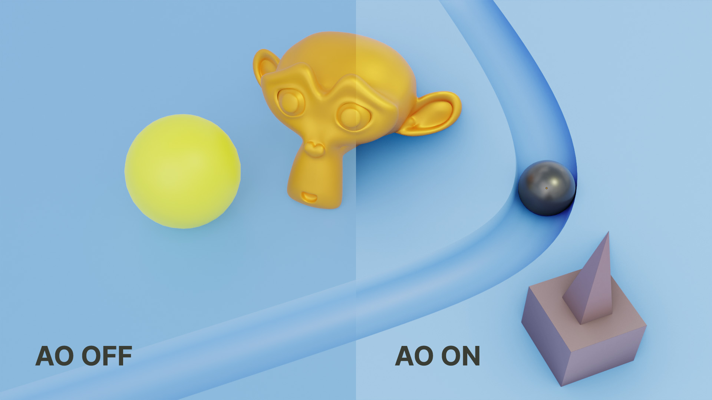
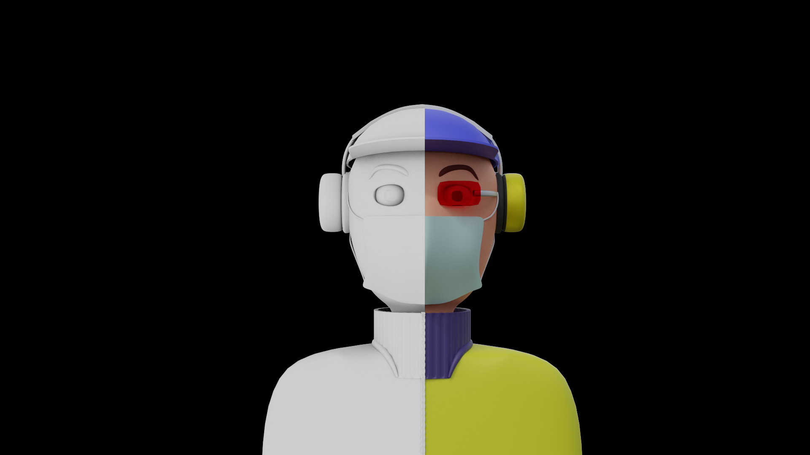
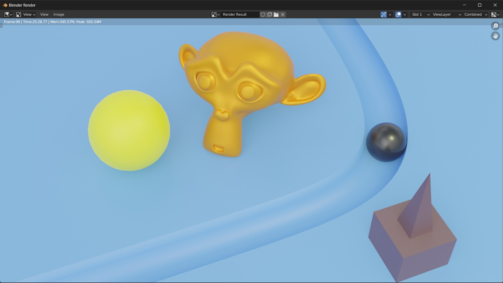
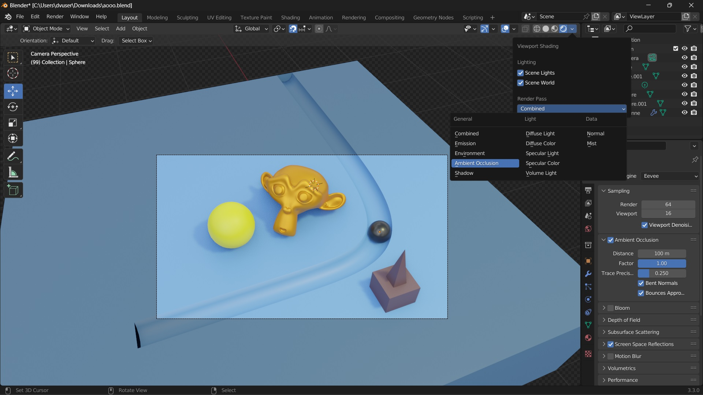
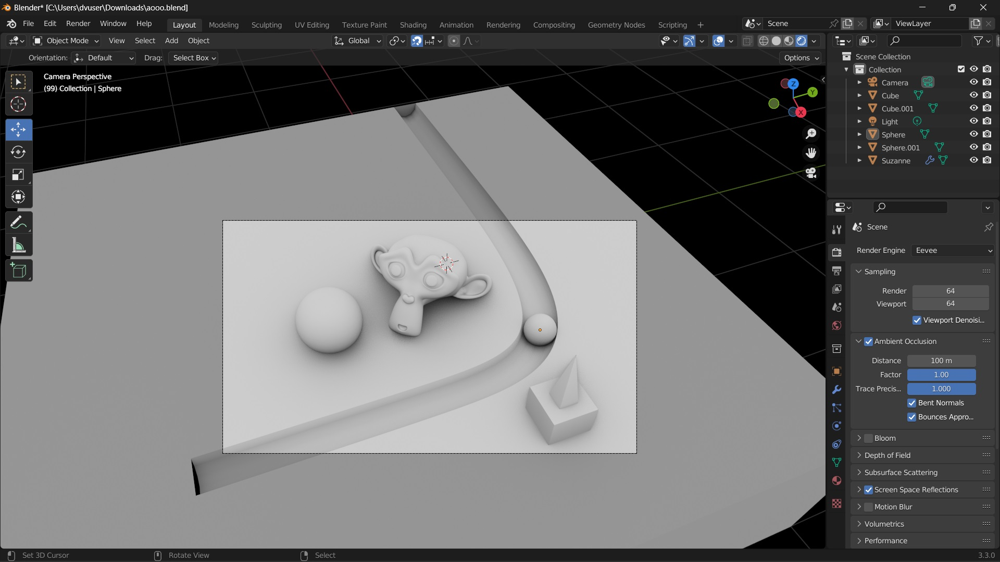
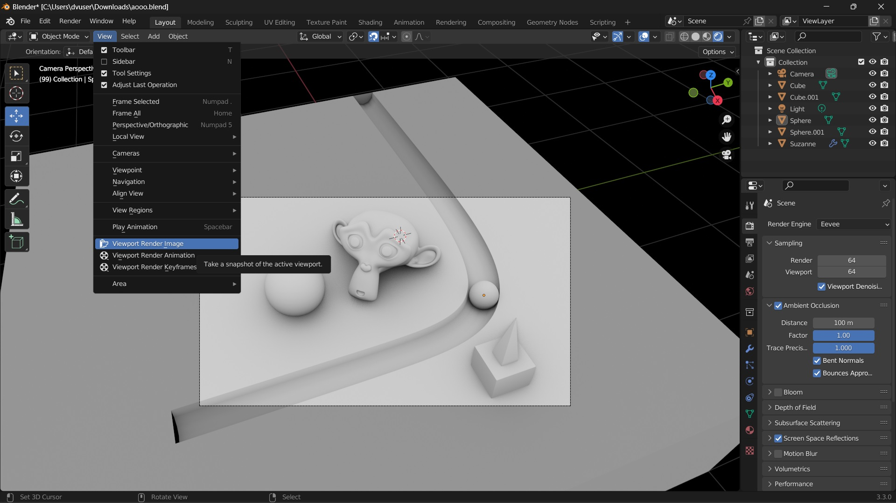
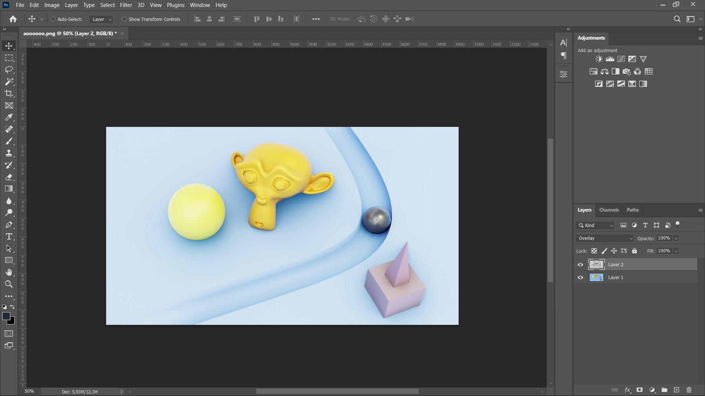
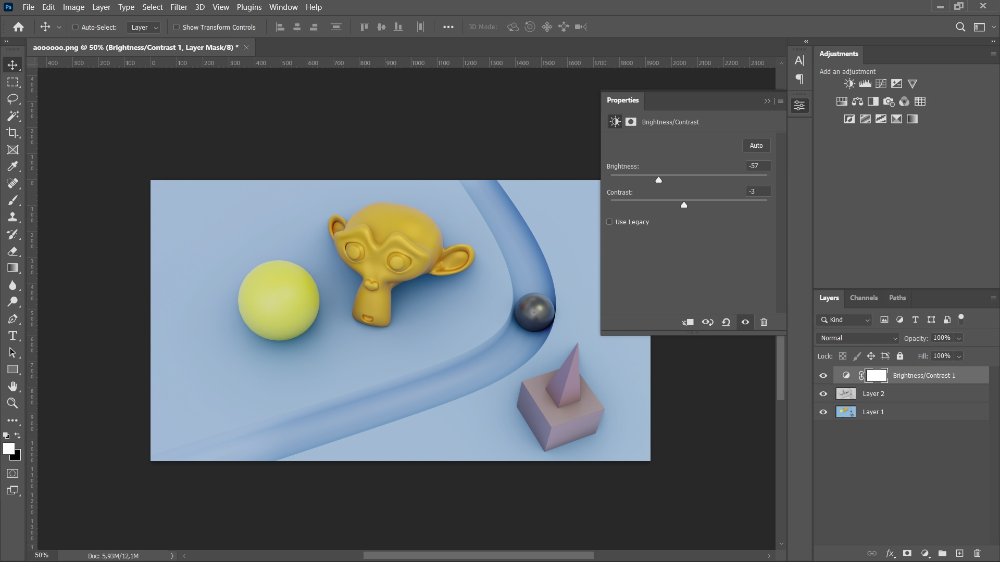

How To Get Fast Ambient Occlusion On Your Cycles With Post-Pro Method


AO Off Vs AO On
Ambient occlusion is a graphics feature that makes shadows more visible and bold. This feature is readily available in the Eevee engine by simply navigating to the render settings and turning on Ambient Occlusion. However, getting ambient occlusion in the Cycles engine is different: you must add an Ambient Occlusion node in the Shader Editor. The bitter fact is that calculating ambient occlusion directly inside your Cycles engine will slow down your render times significantly.
So, why don't we separate the main render result and the ambient occlusion render result? Here is the trick: in the Eevee engine, you can isolate and display only the ambient occlusion, which allows you to render it separately in a fraction of a second.

AO Maps
After separating the main render result and the AO maps, you can combine these two images using third-party software like Adobe Photoshop or even Figma. Here are the exact steps:
1. Render Your Main Scene

Main Scene Render Result
Firstly, render your main scene using the Cycles engine. If your scene is highly complex, my recommendation is to save your image in JPEG format to keep the file size smaller.
2. Switch To Eevee Engine

Turn On AO Only
Go to the Eevee engine render settings and turn on the render viewport. Then, set the Render Pass to Ambient Occlusion to view only the AO pass.
3. Setting Up The Ambient Occlusion

Adjusting AO
Adjust the ambient occlusion settings according to your preference. If you want a cleaner, high-quality result, set the Trace Precision to 1.000.
4. Render The AO Maps

Render AO
Render the viewport view by going to the top menu and selecting View > Viewport Render Image.
5. Combine Those Two Images

Combine 2 Images Using Photoshop
After rendering both the main scene and the AO maps, it is time to combine them. I use Adobe Photoshop for this step. Put the AO map layer on top of your main Cycles render and change the layer blending mode to Multiply (or Overlay/Soft Light, depending on your taste).
6. Fine Tuning

Brightness Adjust
If the image feels over-darkened, you can tune the strength of the AO by adjusting the layer's Opacity or by using a Brightness/Contrast Adjustment filter. With that, you have achieved high-quality ambient occlusion using a very fast, inexpensive method!
The Difference
Final Comparison
You can actually use this method for animations as well, although it requires setting up a compositing node tree or batch post-processing which can be slightly more complex.